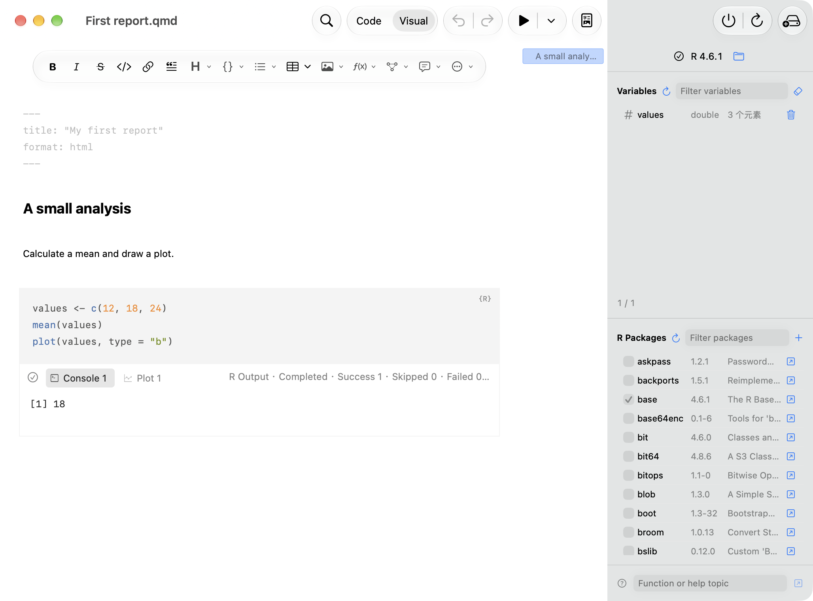

Quick Start
Build an HTML report from a three-value analysis. The example uses only base R and needs no external data files.
1. Prepare the environment
Open Rnotebook → Settings… → Environment to check Rscript, Quarto and the required dependencies. Select executables or an R package library when needed, and explicitly choose to install missing packages. Restart R after changing R or its package library.
You can write text before starting R or configuring Quarto.
2. Create or open a notebook
Choose File → New or press ⌘N. Write before naming the file if you prefer. Open existing QMD or RMD files with ⌘O. Each document opens in a separate window.
Press ⌘S to choose a location and name. Before running or rendering an unnamed document, a native Save panel appears. Cancelling that panel cancels the requested operation.
3. Write a small example
Switch to Code and copy the following into your own notebook. It is displayed here as text only.
---
title: "My first report"
format: html
---
# A small analysis
Calculate a mean and draw a plot.
```{r}
values <- c(12, 18, 24)
mean(values)
plot(values, type = "b")
```
Switch to Visual to see the layout. Add headings, lists, tables, images and formulas from Format, Insert or the editing toolbar.

4. Run R code
Place the caret inside an R chunk and press ⌘↩, or use the Run button beside the chunk. ⇧⌘↩ runs all chunks. The document’s R session starts when needed.
Inspect the results and variables on the right. Press ⌘. to interrupt running code. Stopping or restarting the whole R session clears variables and requires confirmation.
mean(values) should return 18, and the plot should contain three points. Open values in the variable inspector to see 12, 18, 24. Change the last value to 30 and run again: the mean should become 20. This checks editing, execution, output and variable refresh together.
5. Save and keep writing
By default, named documents save about 1 second after typing stops and at most every 5 seconds during continuous input. Adjust or disable Auto Save in Settings → Document. Use ⌘S when Auto Save is off. Private recovery protection remains enabled.
External changes without conflicts are reloaded or merged automatically. Turn that option off to review changes first. Saving pauses on a conflict until you choose a version.
6. Render a report
Use the Quarto toolbar button or File → Render with Quarto… (⇧⌘E). Choose a format, destination, whether to open the result, and YAML or custom parameters. Then render.
Rendering executes the document again. Create required objects in the code, as with values above, rather than relying only on the interactive session. Read the export log if rendering fails. Configure the required PDF engine or dependencies when needed.

Check the generated report for its title, mean and plot. If interactive execution works but rendering reports a missing object, make sure the code creating it is in the document and has not been skipped.
7. Keep learning
- Quarto Syntax: Markdown, R chunks and extensions you can copy.
- Editing and Resources: views, completion, formatting and image paths.
- Running R and Rendering: sessions, execution ranges and export behavior.
- Saving, Recovery and Settings: conflicts, recovery and window memory.